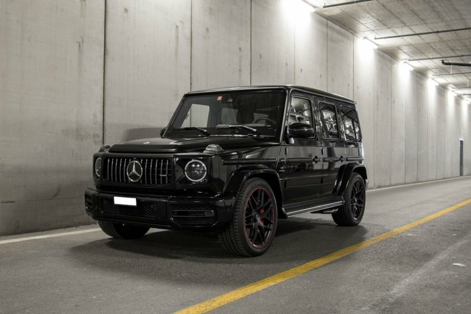

2/5 Mercedes-Benz G-класа

G-класата определено няма нужда от представяне, като един от най-популярните и желани офроудъри на 20 век, моделът вече се е превърнал в символ на лукса. Той разполага с един от най-разпознаваемите квадратни дизайни, но никой не може да отрече естетическата му привлекателност. Всъщност именно този уникален дизайн и изображение правят G-класата да стои в собствен сегмент, предлагайки както лукс от най-висок клас, така и едно от най-добрите офроуд характеристики на всеки съвременен луксозен SUV.
Разбира се, през 2010 г. G-класата премина към напълно дигитализиран интериор с масивен 12,3" инфоразвлекателен панел и множество функции за подпомагане на водача и комфорт. И за моделната година 2019 G-серията запазва своята рецепта за успех - луксозен интериор и чудовищна гама двигатели, която започва от 416 конски сили и достига до 577 к.с.